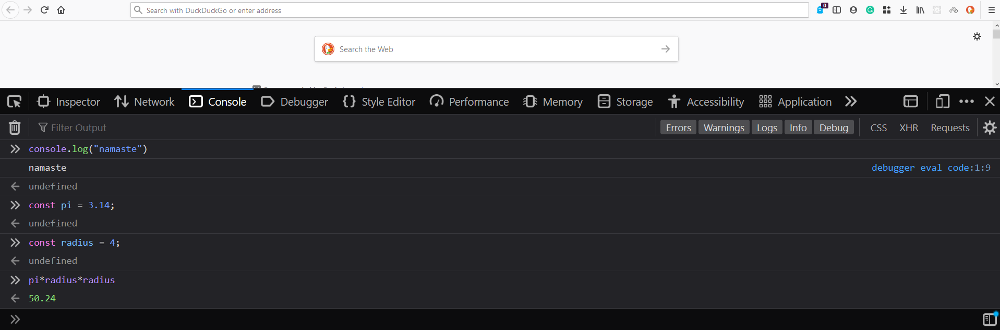

In this post, I will try to document the different ways to run the javascript code.
As a beginner, you always need a simple way to run the code and test it.
Browser Console
The best way to test a piece of code is Browser console.
Open any browser except Internet Explorer as it doesn't support many modern javascript feature.
Press ctrl+shift+I or right click and select Inspect.
In the console tab you can write the javascript code and run.

Run Offline using Nodejs
Install nodejs in your machine.
Write the javascript code in the .js file and run using node command.
Demo
Create a file hello.js and paste the below code.
1console.log("hello world!");
Open terminal or cmd in the location of hello.js.
Run the code using node.
1node hello.js
Online Editor
There are many javascript online editors are available.
Few of them are:
- Playcode
- jsfiddle
- Replit - It supports dozens of language and framework. For javascript select nodejs.
Javascript Playground By Stephen Grider
This is my way to go playground to test the js code.
It is created by Stephen Grider. JSPlayground
This is a open-source GitHub project which you can fork and run it locally.
Quokka.js
This is a extension available in VS Code.
This is a real time js editor. With each line it shows what is the result.
Checkout this short tutorial by Brad Traversy on Youtube.
Conclusion
This is my small list to test js code.
If you have other great tools or library, please ping me on twitter. I will update it here.